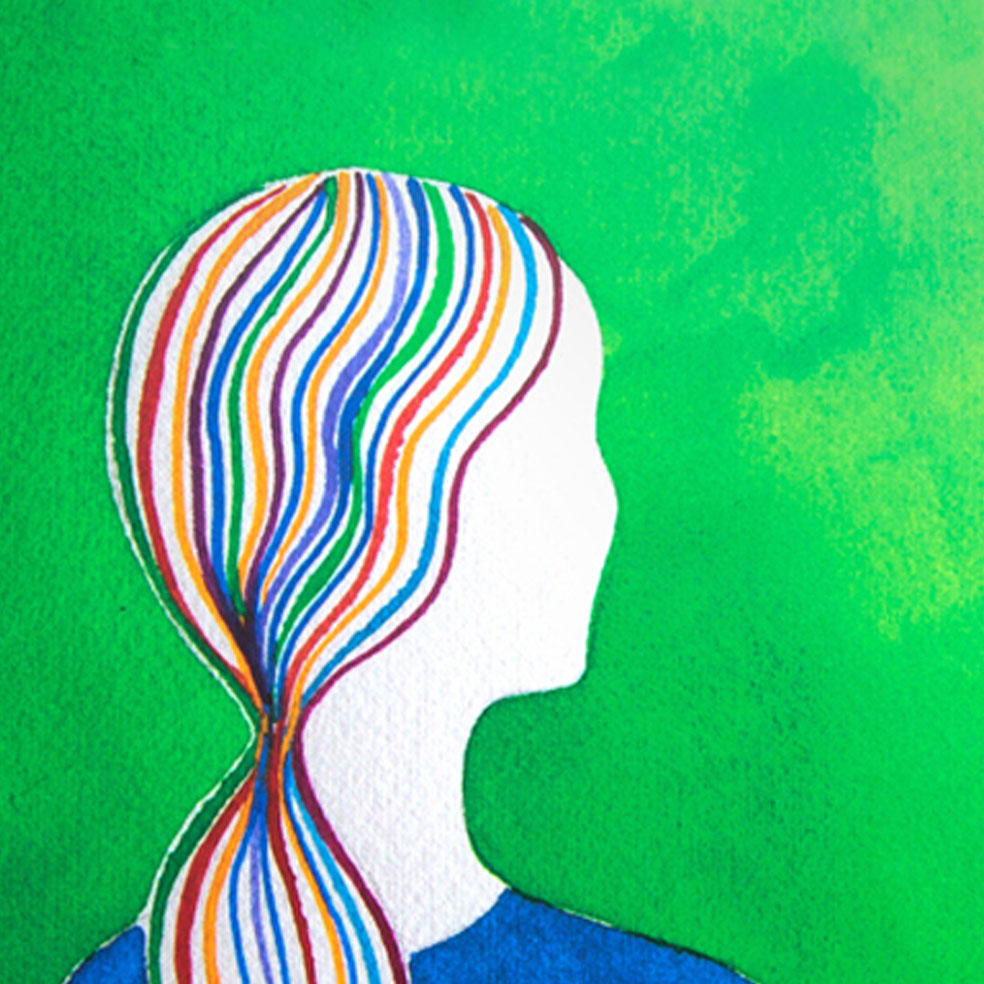
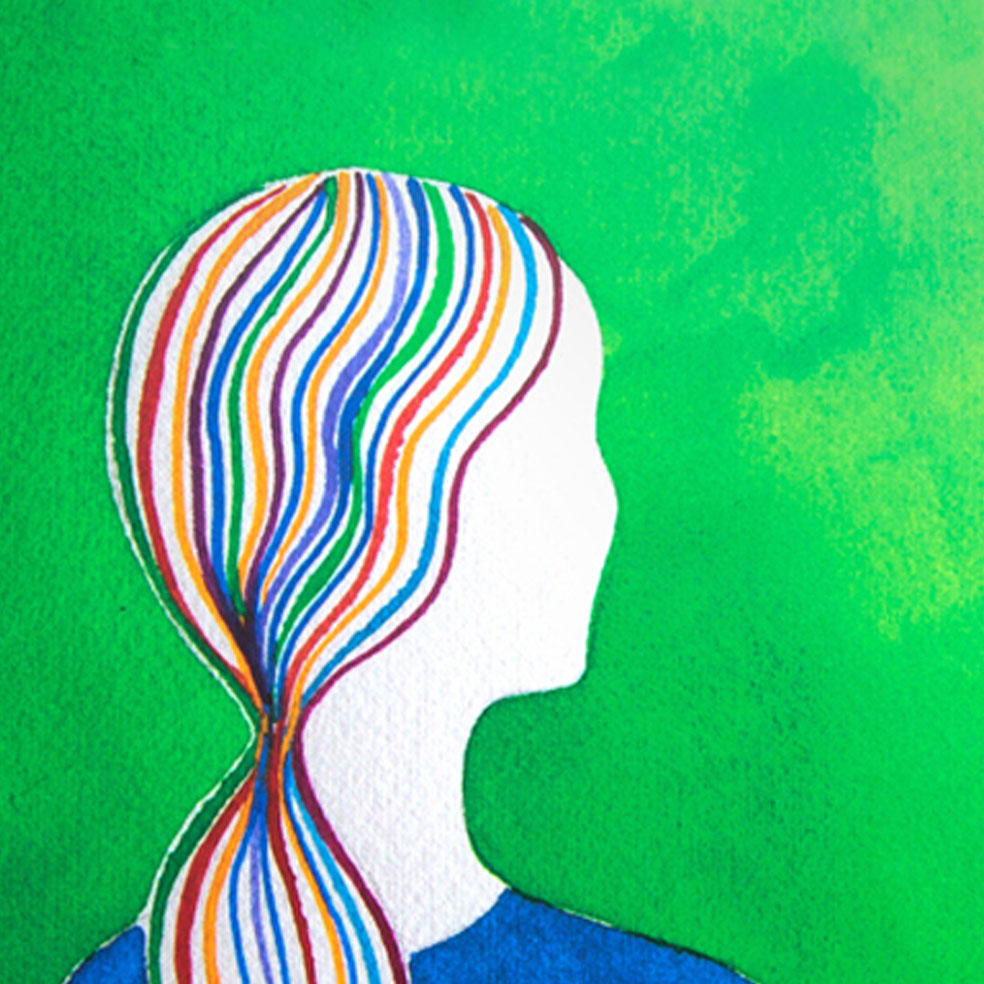
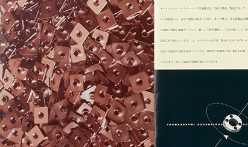
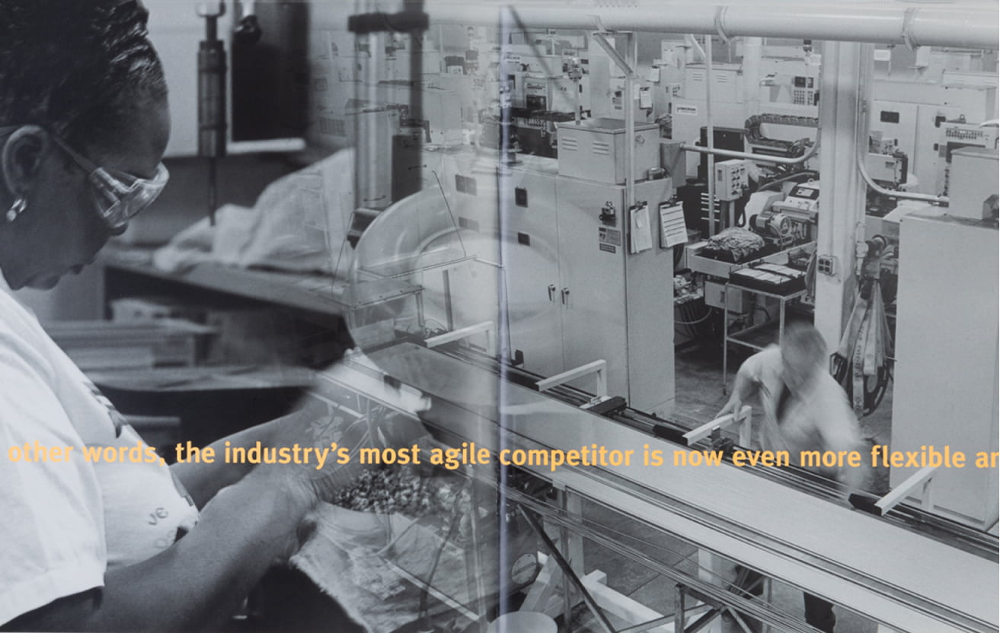
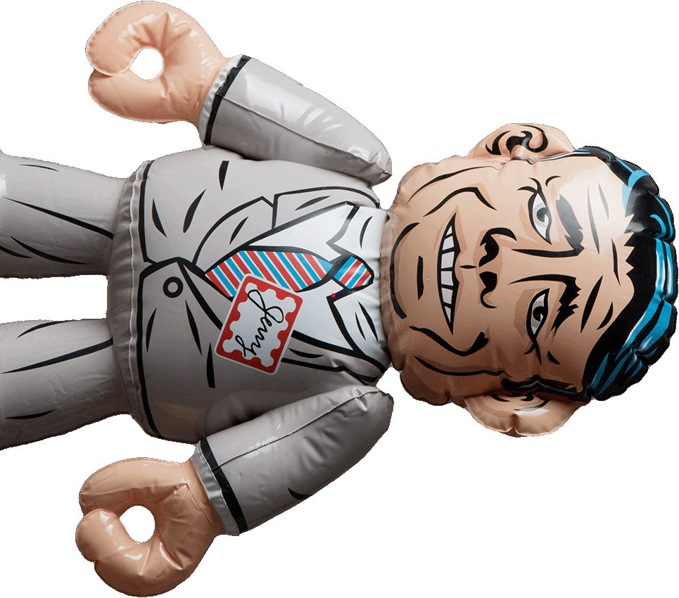
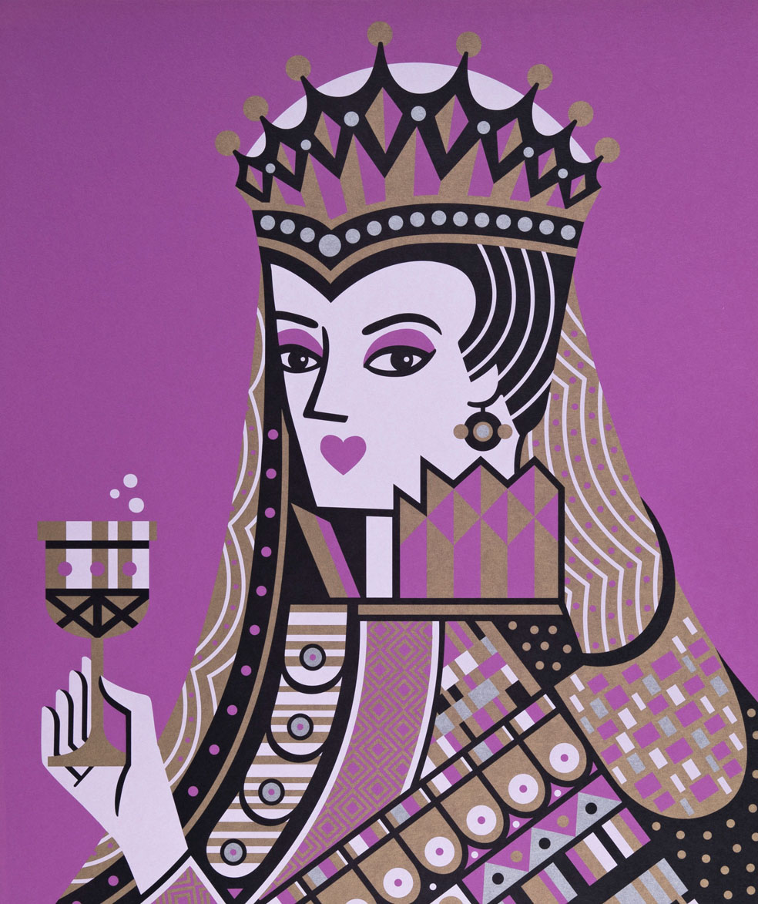

company
upjohn
the

As a pioneering pharmaceutical company, Upjohn needed to demonstrate its scientific knowledge and educate physicians and pharmacists. By working with researchers to deeply understand the content, designers could interpret for their audiences.


opera
grand
rapids

 


In a changing arts and entertainment environment, Opera Grand Rapids needed to build its brand in a way that reinforced its connection to aficionados while attracting new audiences. Visual storytelling was part of the solution.



autocam
A maker of precision automotive, computer, and medical components, Autocam needed to convey to investors and customers their technical prowess and attention to detail. Compelling storytelling through typography and photography contributed to their success.

herman miller
The West Michigan-based furniture maker needed to convey its problem-solving designs to audiences from interior designers to bean counters, and everyone in between. It did so by making human-to-human connections.


A producer of premium papers, French Paper needed to differentiate themselves with graphic designers. They got attention and demonstrated how paper could contribute to the effectiveness of a communications piece.
paper
french
